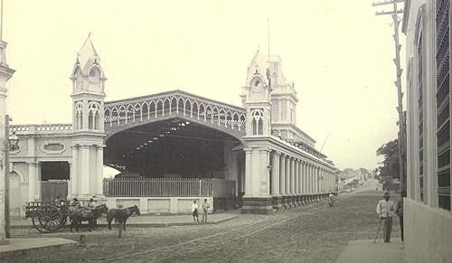

The initiative to have a railway line in Paraguay came from President Carlos Antonio López in 1854, the first railway line was from Asunción to Villarrica.
The works began in the year 1857, and the section from Arsenales to the rivera (proximities of the Port of Asunción) was enabled and in the year 1859 it reached the San Francisco Station located in front of the current Plaza Uruguaya. In that year, the construction of the Central Station began, under the direction of Master Architect Alonso Taylor, who also directed the construction of the other railway stations. Alessandro Ravizza has had notable participation in the internal and external decoration of the building.
The initiative to have a railway line in Paraguay arose from President Carlos Antonio López in the year 1854, who hired professional engineers of English nationality (G. Paddison and John W. Whitehead) who were in charge of carrying out of the preliminary studies and the project for the fitting out of the first railway line: Asunción –Villarrica
In the year 1861, the first section was inaugurated from the Central Station of Asunción to the Trinidad neighborhood and six months later the extension to the city of Luque was inaugurated. In the year 1862, it extends to Areguá. Later, through the years, it reached Encarnación. In the year 1863, the chronicles of that time highlighted the Station as "a recreational point" admiring "the spacious halls with seats and music that are given to passers-by every Sunday".
The character of the building under study includes from neo-gothic reminiscences to the integration of clearly Paraguayan proposals such as: The lateral galleries, and it is defined as one of the works of greatest interest within the architecture of the period of the government of Don Carlos. Anthony Lopez.
It has had a museum since 1992, where furniture containing documents and voluminous technical and accounting books are exhibited, in addition, the initials stand out on the furniture. Carved FCCP. In one of the showcases, original plans of the tracks from Asunción to the Ferry boat of Encarnación are exhibited, the original plans of the locomotives are also exhibited, wall clocks, safes brought from England, photographic catalogs of the locomotives and wagons designed for Paraguay among other things. Also on the main platform is the restored Locomotive (year 2000)
Bibliography:
Gutiérrez Ramón Arq.- Urban and Architectural Evolution of Paraguay 1537-1911. Comuneros Editions 1983 Asunción Paraguay -pages 225-226
www.mopc.gov.py
FEPASA-Archive of the Central Railway of Paraguay
National Secretariat of Culture-General Directorate of Cultural Heritage-Heritage Registry Directorate-Cultural Heritage Registry Department
Municipality of Asunción-General Directorate of Urban Development-Directorate of Planning U.-Department of Cultural Heritage
www.portalguarani.com - Javier Yubi, Historical Railway Museum